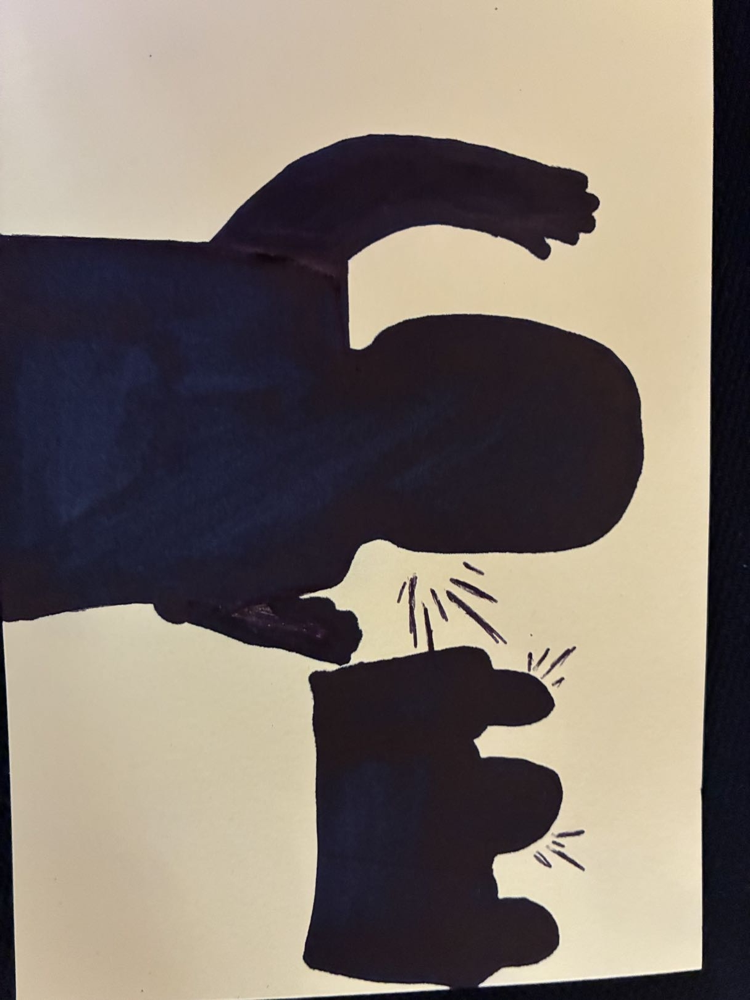
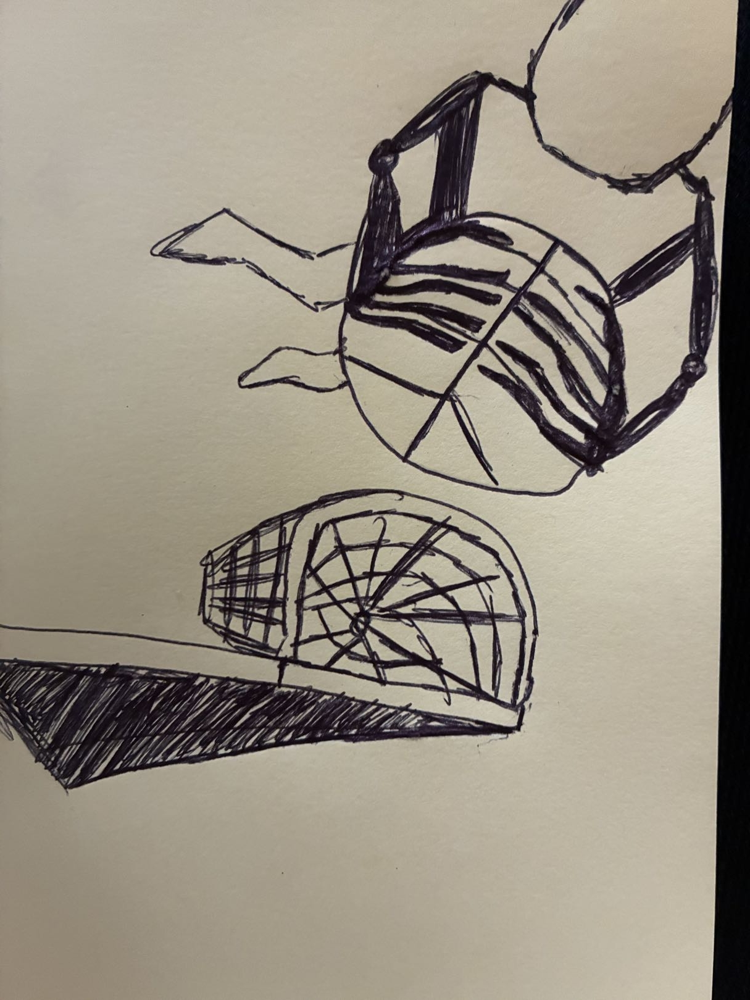
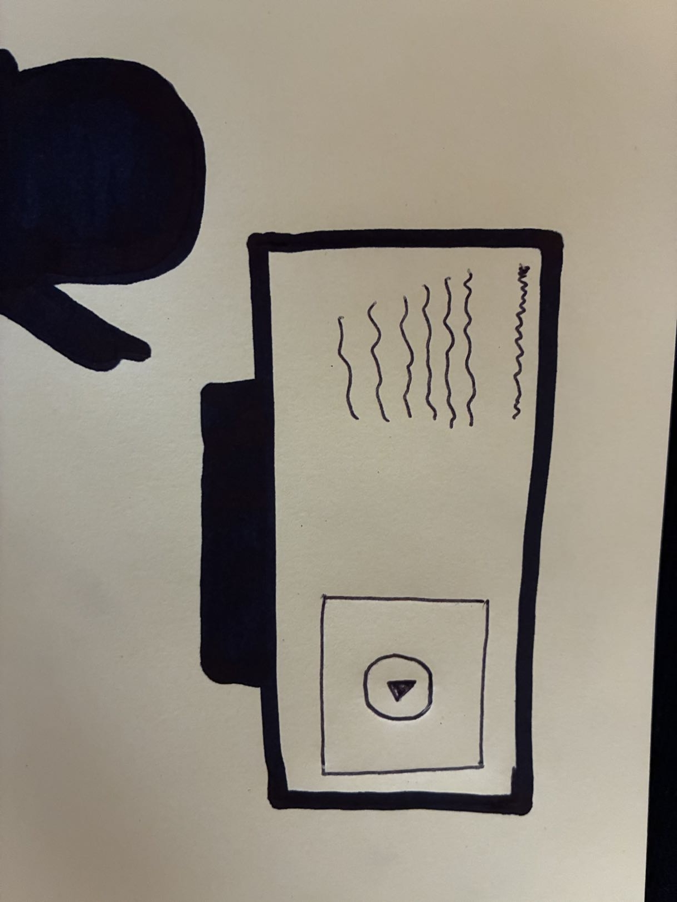
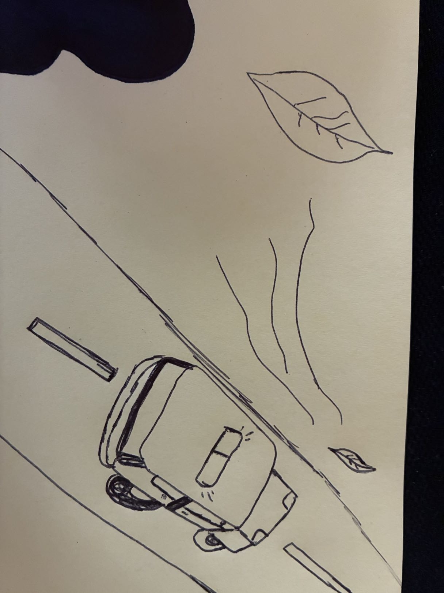

Ambiente general de la Universidad

Audio que captura el ambiente general y personas hablando en las instalaciones de la Universidad El Bosque.
En esta página web recopilamos sonidos, videos y expresiones gráficas de nuestra vida diaria en la universidad y sus alrededores.

Audio que captura el ambiente general y personas hablando en las instalaciones de la Universidad El Bosque.

Sonidos de estudiantes realizando actividades en la cancha deportiva de la universidad.

Audio ambiente de una presentación o proyección de contenido dentro de un aula de clase.

Captura del sonido ambiente urbano y el tráfico característico en la Calle 94 de Bogotá.
Video breve de los estudiantes prestando atención durante una clase.
Vista de la proyección de una película en el televisor o pantalla del salón.
Estudiantes jugando fútbol en la cancha sintética ubicada dentro del campus.
Toma de los árboles y la fachada de los edificios de la Universidad El Bosque.
| Semana | Tema | Actividad |
|---|---|---|
| 1 | Selectores | Ejercicios guiados |
| 2 | Box model | Maquetación básica |
| 3 | Fondos y bordes | Composición visual |